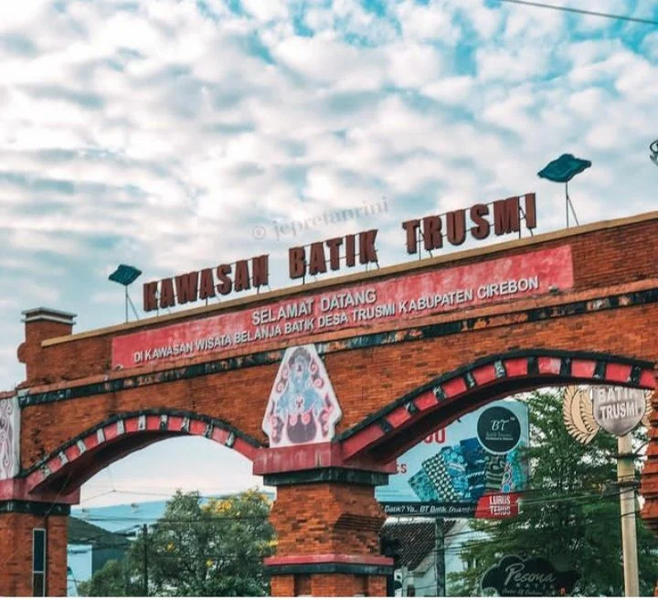
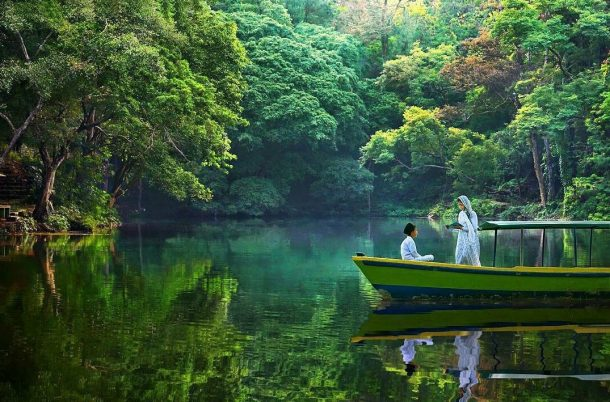
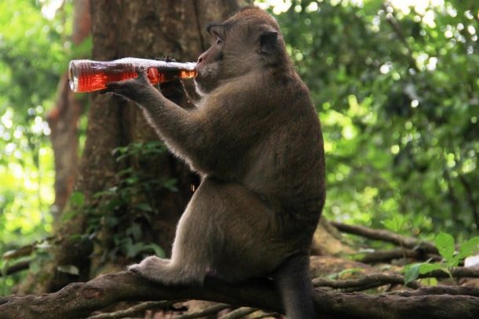

Kota Cirebon, adalah salah satu kota yang berada di provinsi Jawa Barat, Indonesia.
Kota ini berada di pesisir utara Pulau Jawa yang menghubungkan Jakarta dengan Surabaya di lintas utara dan tengah Jawa.
Popular destination
Sebelum membahas tempat wisata di Cirebon,tahukah kamu kalau Cirebon punya sejumlah daya tarik yang tidak kalah dengan destinasi liburan favorit lainnya seperti Bandung,Jogja,dan Bogor.
Kota yang terkenal dengan mangga gedong gincunya ini belakangan banyak dipilih para pelancong sebagai tujuan wisata.
sebuah gua buatan yang berlokasi di kelurahan Sunyaragi, Kesambi, Kota Cirebon dimana terdapat bangunan mirip candi
yang disebut Gua Sunyaragi, atau Taman Air Sunyaragi, atau sering disebut sebagai Tamansari Sunyaragi.
gunung tertinggi Jawa Barat,berdiri dengan puncak tertinggi 3078 mdpl.
Checkout Our Packeges
Bagi kalian yang ingin berkujung ke Cirebon tapi masih bingung,yuk disimak !

Batik Trusmi Cirebon
Batik Trusmi Cirebon merupakan salah satu batik yang terkenal di Indonesia.
Lokasi pembuatannya terpusat di Kecamatan Plered, sekitar empat kilometer di sebelah barat pusat Kota Cirebon, Jawa Barat
1D
pax: 1
Plered
(40 reviews)
100K
/ per person

TELAGA REMIS
Menawarkan segarnya pemandangan alam khas kaki Gunung Ciremai untuk kamu yang ingin melepas penat dari padatnya
kegiatan sehari hari. Terletak sekitar 20KM dari pusat kota Cirebon,tepatnya di daerah Kudela,Kuningan,Telaga Remis.
2D/1N
pax: 5
Kuningan
(50 reviews)
250K
/ per person

HUTAN PLANGON
Tempat wisata unik sekaligus keramat bagi warga Cirebon dan sekitarnya. Konon hutan ini merupakan tempat menyepi dua pangeran Keraton Cirebon. Banyak juga yang mengatakan bahwa
dua pangeran tersebut disemayamkan di Hutan Plangon.
1D
pax:10
Cirebon
(100 reviews)
20K
/ per person
Popular Food
Inilah beberapa makanan populer yang ada di Cirebon.
makanan khas masyarakat Cirebon, Jawa Barat. Makanan ini mirip dengan gulai dan dimasak menggunakan kayu bakar di dalam gentong. Daging yang digunakan adalah usus, babat dan daging sapi.
Mi koclok terbuat dari mi basah yang disiram dengan kuah kaldu ayam kental dan sejumlah bumbu serta dilengkapi dengan irisan daun bawang, kembang kol, tauge, telur rebus, suwiran ayam dan taburan bawang goreng.
Nama es oyen dihubungkan dengan penjual es campur di Bandung yang bernama Pak Oyen. Saking terkenalnya warung es milik Pak Oyen tersebut, maka terciptalah sebutan es oyen
Photo's From Travellers
Inilah beberapa Dokumentasi dari customer yang sudah pernah berkunjung ke Cirebon,yuk dilihat !